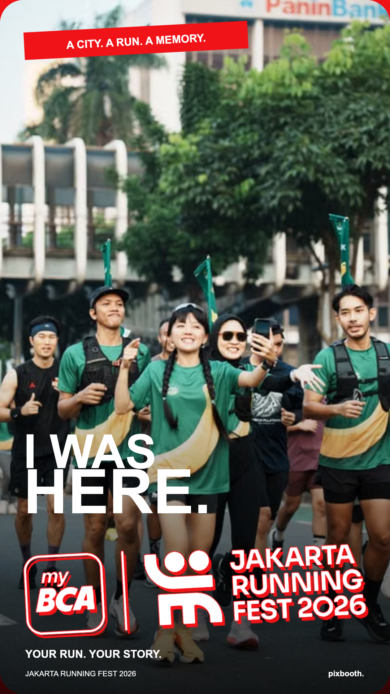01 / 1 FOTOFinish Hero1 foto · full bleed · logo mengambangUnduh contohFrame transparan ↗
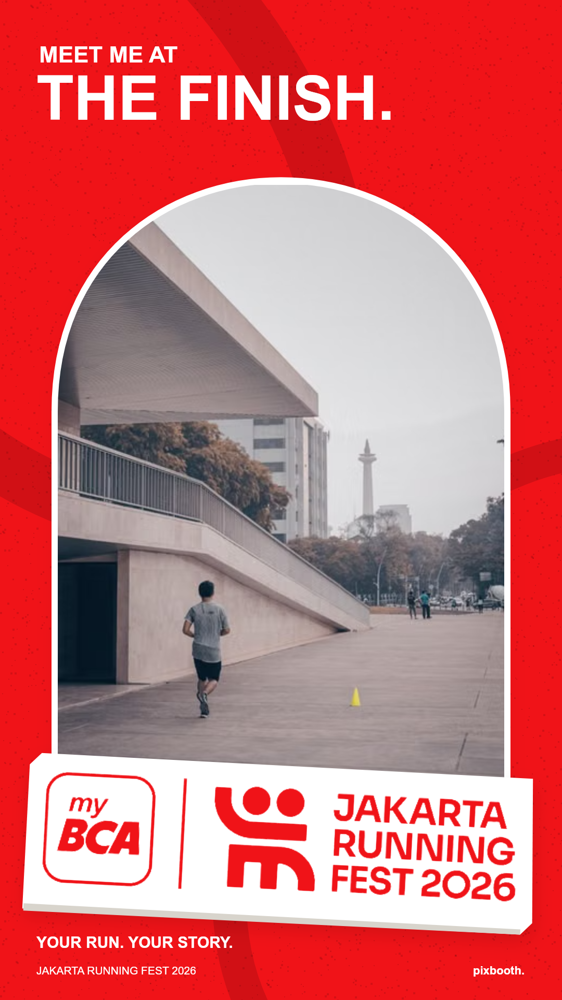02 / 1 FOTOCity Arch1 foto · gerbang lengkung · podium logoUnduh contohFrame transparan ↗
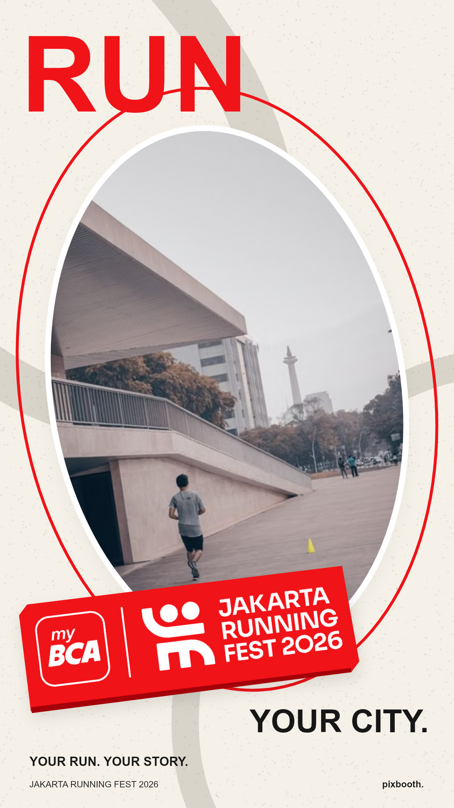03 / 1 FOTOVictory Orbit1 foto · oval diagonal · stiker timbulUnduh contohFrame transparan ↗
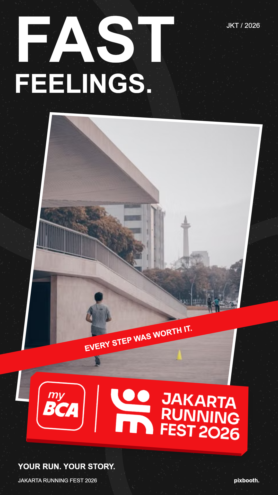04 / 1 FOTOFast Lane1 foto · potongan miring · speed ribbonUnduh contohFrame transparan ↗
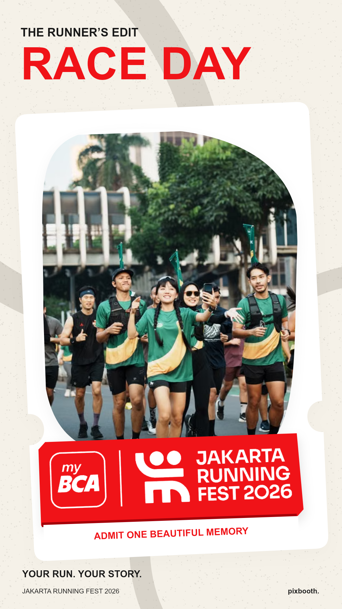05 / 1 FOTORunner Pass1 foto · kartu die-cut · bib editorialUnduh contohFrame transparan ↗
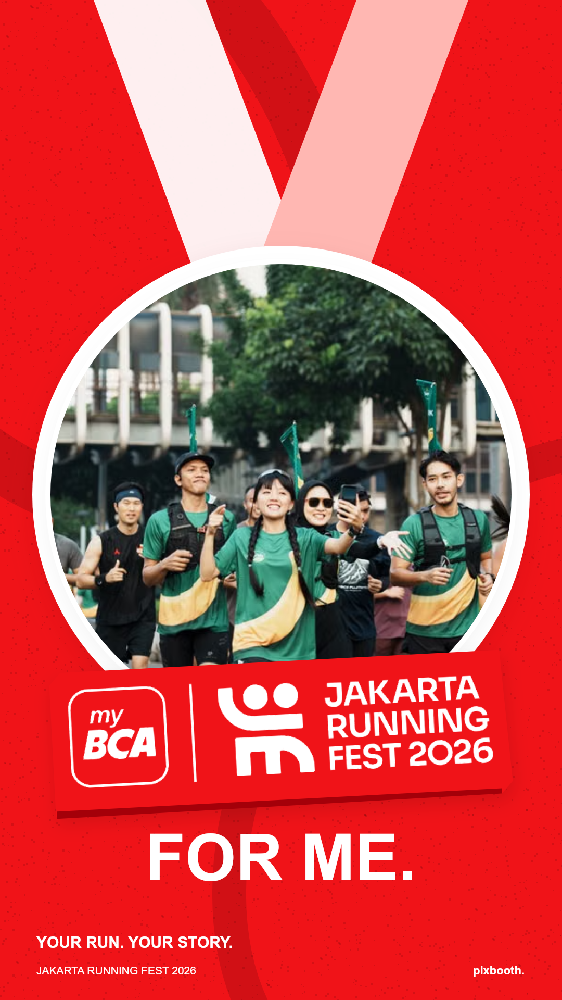06 / 1 FOTOMedal Moment1 foto · medali bundar · pita silangUnduh contohFrame transparan ↗
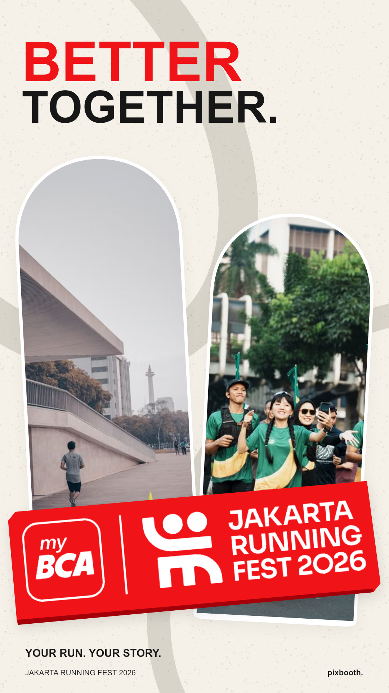07 / 2 FOTOSide by Stride2 foto · dua lengkung · badge silangUnduh contohFrame transparan ↗
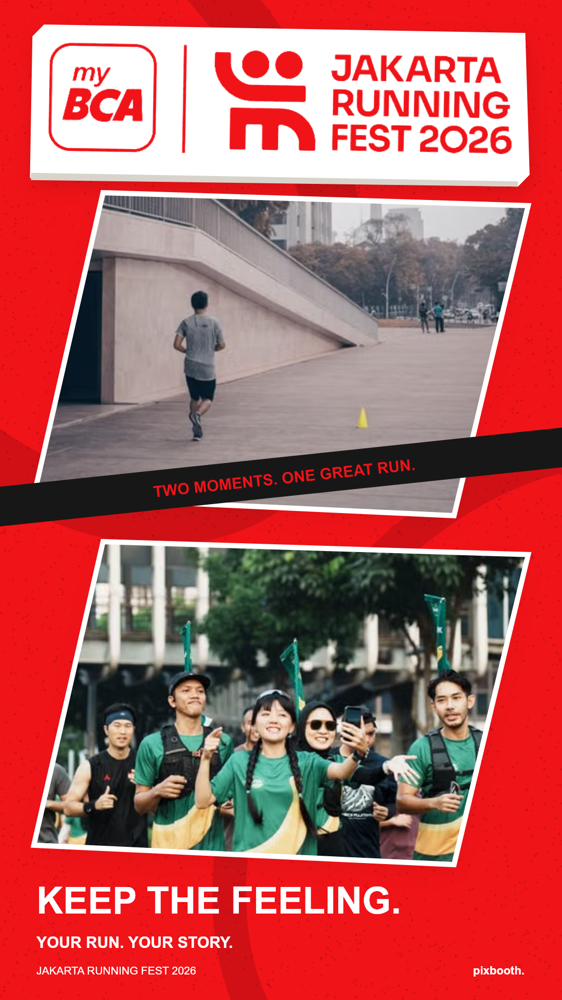08 / 2 FOTODouble Sprint2 foto · split diagonal · logo di tengahUnduh contohFrame transparan ↗
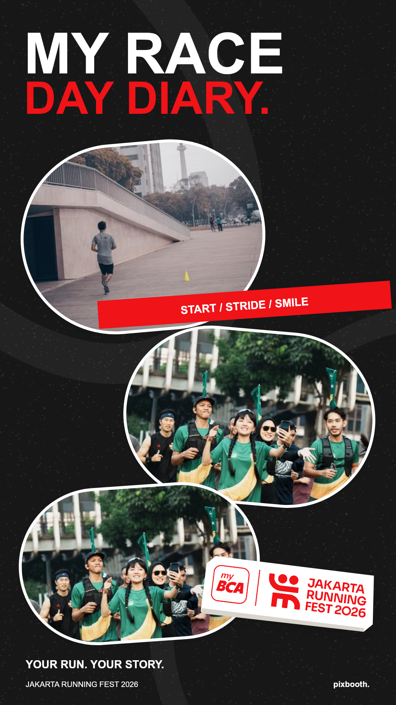09 / 3 FOTORace Diary3 foto · kapsul bertingkat · memo balapanUnduh contohFrame transparan ↗
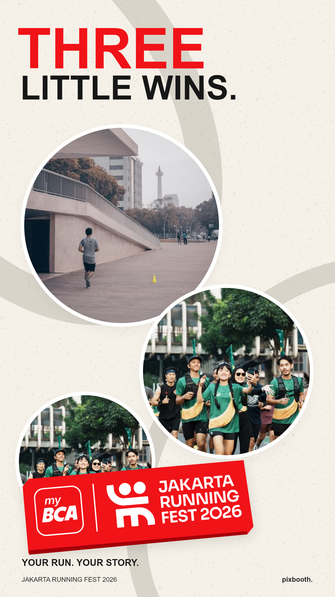10 / 3 FOTOThree Laps3 foto · lingkaran dinamis · orbit merahUnduh contohFrame transparan ↗
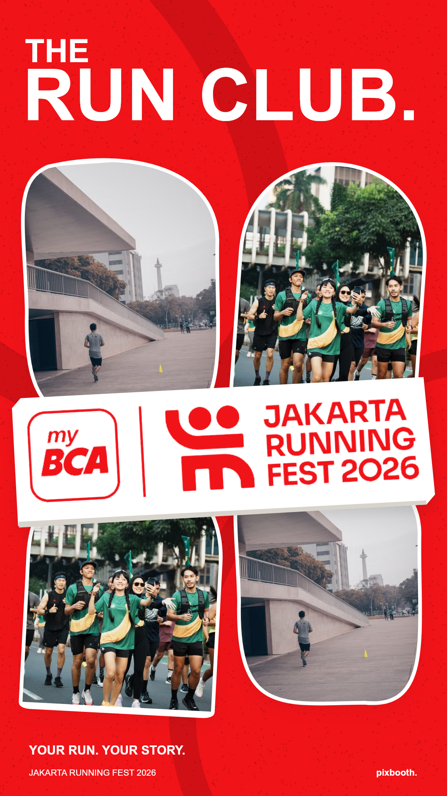11 / 4 FOTOCrew Collage4 foto · kolase organik · logo menimpa fotoUnduh contohFrame transparan ↗
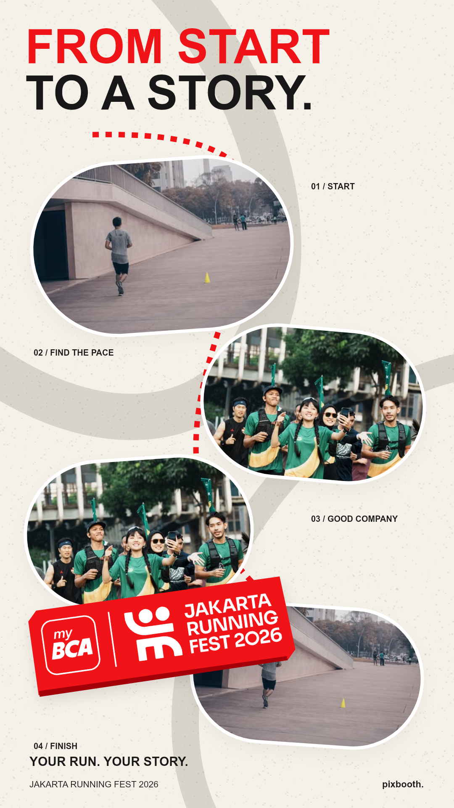12 / 4 FOTOStart to Finish4 foto · jalur berkelok · cerita satu hariUnduh contohFrame transparan ↗